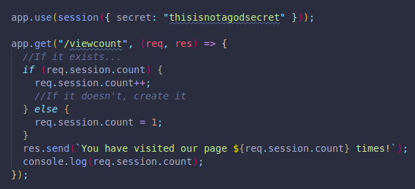
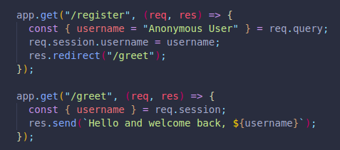

Sessions are on the server-side, we store the data on the server instead of on a file on the local computer like with cookies.
There is a limit of cookies you can have in a specific webpage or domain (20), also on the amount of data they can store (4 KB).
Cookies are also not as secure, where sessions are.
The server session sends a cookie back, with a key to see the data.
Like in a shopping cart, we may add items to it even without having a registered account. Instead of storing the data for an existing user in a database, we can use a session to have the visitor register later, when they are trying to complete the purchase. In the session there is an id which associates the shopping cart's content to the new user that will be created. It does this by sending back a cookie with a key, which is done by the browser, to unlock the data. There is no need to save all the data on the browser too, only this key. In future requests we will have access to all the relevant data in this other database, which is sometimes temporal and not the same as our user information database.
Cookies and Sessions are not exclusive to Express.
We can implement sessions with Express Session.
Cookie parser no longer needs to be installed for sessions to work.
We first run npm i express-session.
We need to save session to a variable by requiring it.
We can now add an app.use(session()), where we internally execute session.
Inside our session() we must include our secret inside curly brackets.
Cookies are necessary for sessions to work, which is why a session creates a session id key and has a value of a signed cookie.
If we check our browser's cookies, there will be a new key value pair, the key name will be connect.sid. This is the session's id and is created automatically with session. Express can now remember a visitor across time.
It is a small space that associates a user's browser to the activity related to that particular website/domain.
Upon setting up our session middleware, we will have access to req.session along with many other keys.
Here we are using req.session.count to store the number of times our user has visited the page. We will also use that data to display it for the user.
By using some logic, we can make sure the count is updated each new visit.
The data will be stored on the server and can be accessed as long as the cookie exists on the user's browser.
(THE DEFAULT STORAGE OF THIS DATA IS A JS OBJECT, LOCALLY AT THE CLIENT SIDE, WHICH IS NOT RECOMMENDED FOR PRODUCTION DUE TO MEMORY LEAKAGE. WE CAN USE ANY SESSION FRAMEWORK INSTEAD, LIKE MONGO.)
The browser only saves the key for the session id and the value, this being the actual key which session will:
The sessions ends when the server is stopped or restarted.
We can get rid of the deprecated warnings by adding resave: false, and with saveUninitialized: false.
We can create new parameters and save them to our session too, to later access and use them.
Here we create a register page, if the user doesn't include a username=value in the query, we will use the default value we declared for username.
As soon as we do include a username value, that information will be stored and shown to the user every time they visit our website:
They help us send one-time alerts that go away after certain action, normally after redirecting the user.
Like when creating a new farm, we only want the alert to show once, not every time after the page is refreshed.
We will be using a package called connect-flash, although there are multiple options.
It must be installed with npm i connect-flash.
We must save it into a variable by requiring it, and execute the variable inside an app.use().
Now all of our req have a method called flash available; req.flash.
The method function will take two parameters, the first for the type of alert/category, and the second for the message we want to display.
We should declare it before the redirect path. Example:p>
This only saves the data to the session, nothing will happen on the user's end yet.
The next thing we must do is include messages: req.flash("success") in the path we are redirecting to. This is inside the res.render() of the specific path. (It goes inside curly brackets, like when passing along an object.)
The last thing we need is to include messages in an ejs field inside the ejs file for the path we are redirecting to/rendering. (<%= %> ) This should go all the way to the top, right after the body starts.
( This alert won't appear when visiting the path in this example, only when creating a new farm.)
We can have a logging you out message, thanks for joining, etc. And we can have options in case of failure and any other categories.
Instead of having to include the messages:req.flash("success") on each path, we can create a middleware that runs on every path.
This works thanks to res.locals.
We would create an app.use() with a next parameter, inside it would have res.locals.messages = req.flash("success"), followed by a next().
We can then use a partial with all the messages categories and only use the one needed on the path needed.
Also, we can remove it from the path we are redirecting to/rendering and only make use of it when the action matches.
(We would only include it in the path that triggers the action.)